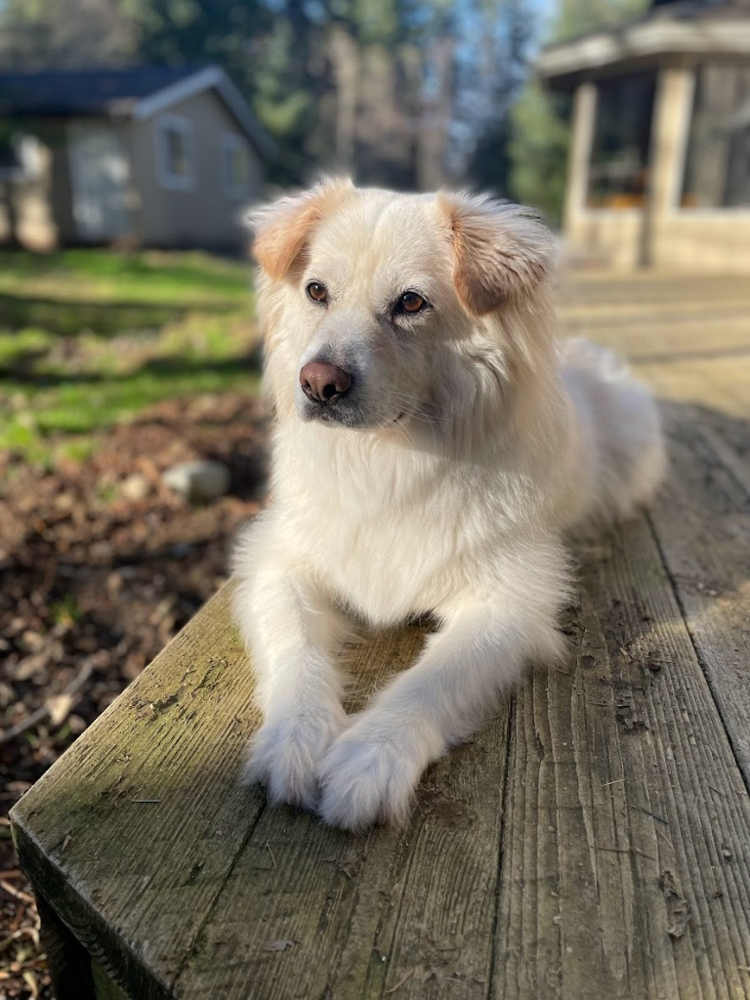
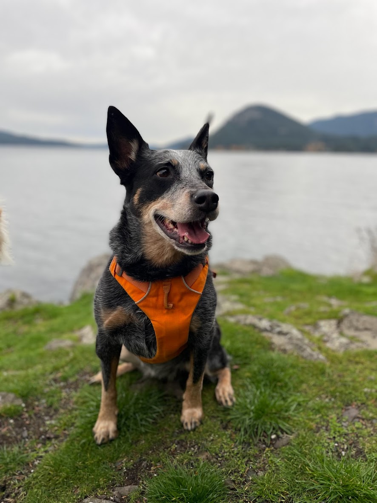

About
Product and program leader with 15+ years of experience at Amazon, Apple, Google, and Chewy. Builds and scales teams in situations that are complex, undefined, or broken, and leaves results that are hard to argue with: $300M in supply chain savings, 96% Customer Satisfaction at the Apple Watch global launch, 50% reduction in compliance audit cycles.
Daily LLM user with direct experience designing and deploying enterprise-wide AI programs. Operates at both ends of the org: C-suite strategy and execution-level product work, without losing the thread between them. Targeting Senior Manager and Associate Director of Product roles in consumer, retail, pet care, and health and fitness.
Experience
Click any role to explore the full story.
Project Kariba
Conceived a first-of-its-kind upstream fulfillment model: staging bulk inventory at low-cost nodes instead of high-cost fulfillment centers, projecting $293M in supply chain savings over three years. Still in active use.
Apple Watch 1.0 Launch
Designed and launched day-one global customer support for Apple Watch, building custom real-time support tooling from scratch and achieving 96% Customer Satisfaction across all worldwide contact centers at launch.
Enterprise Product Analytics
Built Chewy's first enterprise product analytics strategy, re-architecting instrumentation into a unified metrics framework adopted by 20+ product teams, eliminating 50+ manually corrected metrics and saving 20 hours/week.
Associate Director of Technical Product
-
Analytics
Built Chewy's first enterprise product analytics strategy from scratch, re-architecting instrumentation across all platforms into a unified metrics framework adopted by 20+ product teams, eliminating 50+ manually corrected metrics, saving 20 hours per week, and shifting the org from reactive execution to outcome-driven prioritization.
-
AI
Designed and deployed Chewy's first AI for Product Managers program, equipping 20+ product teams with practical LLM fluency across roadmapping, PRD drafting, and data analysis workflows, contributing to measurable cost avoidance through reduced manual effort and faster decision cycles.
-
Strategy
Implemented a quantitative prioritization model that reduced peak-season escalations to zero and improved roadmap transparency across 20+ product teams and executive stakeholders.
-
Security
Hand-selected by the CTO and CISO to stabilize the GRC and Privacy Technology teams during a critical transition; led PCI DSS 4.0 readiness assessments across three business entities to Attestation of Compliance delivery, reduced audit cycle time by 50%.
-
People
Directly managed 13 people globally; mentored 20% to promotion and turned around 30% of underperformers within 12 months.
-
Compliance
Operationalized Chewy's CCPA/DSAR compliance program at scale, processing 2,000–3,000+ requests bi-weekly at a 4-day average completion time against a 45-day SLA; deployed PII automation to production, launched BigID data classification across 29+ production data sources, and managed a 56-application User Access Review program through SailPoint integration.
Principal Technical Program Manager, Computer Vision ML Solutions
-
ML
Acted as Technical Lead for a 21-person cross-disciplinary team (data scientists, hardware engineers, software engineers) to deploy Amazon's CV-based defect detection platform across 300+ fulfillment centers, driving an 11% reduction in item defect rates and owning the full technical roadmap from ML research to frontline operational rollout.
Senior Manager, Multiple Organizations
-
Supply Chain
Conceived and launched Project Kariba (Upstream Fulfillment), a first-of-its-kind supply chain solution staging bulk inventory at low-cost upstream storage nodes instead of routing directly to high-cost fulfillment centers; built the end-to-end cost model, product selection strategy, and 3PL operating model from scratch, projecting $293M in supply chain savings over three years. The system remains in active use and continues to expand.
-
Platform
Led ground-up re-architecture of Amazon's largest operational metrics platform (30,000 daily users), reducing page load times from 3 minutes to 5 seconds, replacing manual Excel reporting across 300 fulfillment centers, cutting report creation time by 80%, and driving 2× YoY user engagement.
-
Cost Savings
Drove $32M in cost avoidance through platform optimization and technical debt reduction, maintaining 100% system uptime throughout major architectural migrations.
-
Crisis Response
Directed a 5-day mission-critical turnaround of pandemic-response tooling that ensured uninterrupted global delivery of essential goods during unprecedented supply chain disruption.
-
People
Managed a team of 3 managers overseeing 30+ total ICs, driving 4 high-impact promotions and maintaining a high talent bar through performance-based decisions.
Solutions Architect, Contact Center Operations
-
Launch
Designed and launched day-one customer support capability for the Apple Watch 1.0, building custom solutions to enable real-time support for a brand-new product with no screen sharing capability, achieving 96% Customer Satisfaction across all Apple contact centers worldwide at launch.
-
Platform
Delivered real-time video, screen sharing, and chatbot integrations into Apple's core contact center software across five worldwide locations, equipping 2,000+ agents with new support capabilities.
Technical Partner Operations Manager, Google Shopping
-
Partnerships
Served as primary technical liaison between Google and Walmart, managing technical implementation of 10,000+ daily product listing ads and driving $10M+ in monthly revenue.
Leadership & Community
EarthCorps: Executive Board Member
September 2022 – February 2025
Served on the Board of Directors for Seattle-based nonprofit EarthCorps, developing global environmental leaders and restoring ecosystems throughout the Puget Sound region.
Green Leader: Guitarist & Musical Director
February 2025 – Present · Arts & Culture, Whidbey Island
Founded and leads Green Leader, an instrumental music project blending funk, soul, R&B, and psychedelia, rooted in the natural landscapes of Whidbey Island. Composed, arranged, and recorded all 9 original tracks on the debut album Trails, overseeing the full creative process from songwriting through mixing, mastering, and release.
Directs a 5-piece band and produces live performances at local venues and fundraising events, including partnership concerts with the Whidbey Camano Land Trust. Manages all aspects of the brand: social media, EPK, press outreach to newspapers, podcasts, and radio, applying professional skills in project management and data-driven promotion to grow audience reach and community impact.
Listen to Trails on SpotifyWhat I Bring
Four things that show up in every engagement, regardless of company size or industry.
Builder at the Core
Whether it's a product, a team, or an entire org, I build things that last. I've taken on platforms with no roadmap, teams with no direction, and processes with no ownership. I left each one meaningfully better.
Clarity in Complexity
I thrive in ambiguity. I move quickly from "we don't know what we're doing" to a shared direction, clear priorities, and a team that knows what winning looks like. No permission needed to lead.
People-First Leadership
The best products come from the best teams. I invest heavily in coaching, psychological safety, and honest feedback. High performance and high trust aren't a trade-off; they're the same thing.
AI-Forward by Default
I don't just talk about AI. I use it daily and have designed enterprise-wide programs around it. I know how to accelerate a team's output with LLMs and how to build the organizational habits that make that acceleration stick.
Skills
Product & Strategy
Data & Analytics
Leadership & Operations
Writing & Communication
Education
B.S., Business Administration
Full Sail University
A.S., Audio Engineering & Music Production
Full Sail University
Beyond the Resume
A few things that don't fit in a job description but make me who I am.
Triathlete & Avid Swimmer
Swim, bike, run. Repeat. The pool is where strategy gets worked out and big ideas surface (often literally mid-lap).
Multi-Instrumentalist
Guitar, piano, drums, and trumpet. Four instruments, one brain. A natural fit for someone who's most comfortable wearing multiple hats.
Wintergreen Sound
Runs a home recording studio dedicated to capturing the musicians of Whidbey Island. Because great local talent deserves world-class sound.
Epic Fantasy Devotee
Novels, films, tabletop RPGs, video games. If there's a sprawling world with lore, magic systems, and high stakes, count me in.
The Real Bosses
No org chart needed. Seniority determined by who gets fed first.

Desmond
Chief Nap Officer. Expert in emotional support and strategic begging.

Abbie
Head of Security. Has yet to successfully identify a real threat.